1, i.e., k⊥ = k⊥1. Then another perpendicular
basis vector is defined by
1, i.e., k⊥ = k⊥1. Then another perpendicular
basis vector is defined by  2 = e∥×1. Then v⊥ is written as v⊥ = v⊥(
2 = e∥×1. Then v⊥ is written as v⊥ = v⊥( 1 cosα′ +
1 cosα′ +  2 sinα′), which
defines the gyro-angle α′. Then the blue term is written as
2 sinα′), which
defines the gyro-angle α′. Then the blue term is written as We need to perform the gyro-average and velocity integration in the polarization density (expression (230)) to obtain a matrix form that relates the polarization density at gridpoints to δΦ at gridpoints, so that the corresponding matrix form of the left-hand side of Poisson’s equation (231) can be inverted to solve for δΦ.
The dependence of the first term in expression (230) (often called adiabatic term) on δΦ is trivial (because δΦ is independent of the velocity in particle coordinates):
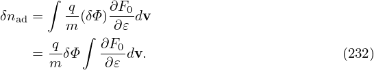
If we assume F0 is Maxwellian, then the velocity integration can be analytically performed:
Next, let us consider the more complicated term, the second term in expression (230), i.e.,
| (234) |
At particle location x, we construct local (velocity) cylindrical coordinates (v⊥,v∥,α′). Then the velocity element is given by dv = v⊥dv⊥dv∥dα. Then the above integration is written as
| (235) |
Note that ∂F0∕∂𝜀 (in terms of particle coordinates) dpends on α. But this dependence is usually weak and neglected. So it is moved outside of the α integration. Note that the above is a velcoity space integration for a fixed particle position.
Using the definition of the gyro-averaging ⟨…⟩ = (2π)−1 ∫ 02π(…)dα′, expression (235) is written as
| (236) |
Here the gyro-averaging can be understood as time integration of the gyro-orbit that has the point x on its trajectory. The gyro-phase when the particle is passing x is α. So its guiding-center location X can be calculated as
| (237) |
Using X, the full gyro-ring is written as (parameterized by α′)
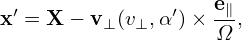
i.e.,
| (238) |
Then expression (236) is written as
To proceed, we have two options. One is to assume no analytical expression of δΦ(x) and use pure numerical interpolation to handle the above integration, and finally expression it as combination of δΦ values on gridpoints. Another option is to assume basis function expansion of δΦ and perform analytically the integration for each basis function. The first option is further discussed in Sec. 6.2. Next, we focus on the second option and use Fourier expansion.
We Fourier expand δΦ(x) as
| (240) |
where δΦk ≡∫ δΦ(x)exp(−ik ⋅ x)dx is the expansion coefficients. Then expression (239) is written as
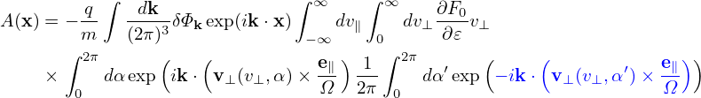
Let k⊥ define one of the perpendicular direction 1, i.e., k⊥ = k⊥1. Then another perpendicular
basis vector is defined by 2 = e∥×1. Then v⊥ is written as v⊥ = v⊥(1 cosα′ + 2 sinα′), which
defines the gyro-angle α′. Then the blue term is written as
Then the α′ integration is written as
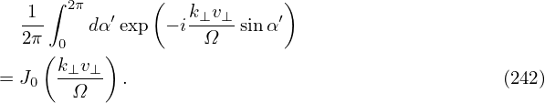
where use has been made of the definition of the zeroth Bessel function of the first kind.
Similarly, the α integration is also reduced to J0
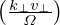
. Then A(x) is written asIf F0 is a Maxwellian distribution, then the remaining velocity integration in Eq. (243)can be analytically performed. Maxwelliand distribution is given by
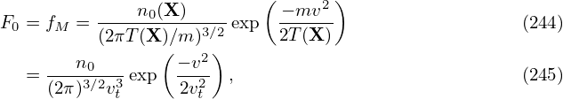
where vt =
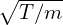
, then| (246) |
As is mentioned above, we ignore the weak dependence of n0(X) and T(X) on v (introduced by X = x + v × e∥∕Ω) when transformed back to particle coordinates. (For sufficiently large velocity, the corresponding Larmor radius will be large enough to make the equilibrium undergo substantial variation. Since the velocity integration limit is to infinite, this will definitely occur. However, F0 is exponentially decreasing with velocity, making those particles with velocity much larger than the thermal velocity negligibly few and thus can be neglected.)
Parallel integration Using Eq. (246), the expression in the square brackets of Eq. (243) is written as
where v∥ = v∥∕vt, v⊥ = v⊥∕vt. Using
| (249) |
the integration over v∥ in expression (248) can be performed, yielding
| (250) |
Perpendicular integration Using (I verified this by using Sympy)
| (251) |
where I0(a) is the zeroth modified Bessel function of the first kind, expression (250) is written
| (252) |
where b = k⊥2vt2∕Ω2 = k⊥2ρt2. Then the corresponding density (234) is written as
| (253) |
In Fourier space, the adiabatic term in expression (233) is written as
| (254) |
Plugging expression (253) and (254) into expression (230), the polarization density np is written as
Define
| (256) |
then Eq. (255) is written as
| (257) |
Expression (257) agrees with the result given in Yang Chen’s notes. Note that the dependence on species mass enters the formula through the Larmor radius ρt in Γ0.
Γ0 defined in Eq. (256) can be approximated by the Pade approximation as
| (258) |
The comparison between the exact value of Γ0 and the above Pade approximation is shown in Fig. 1.
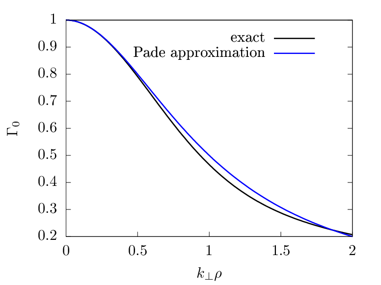
Using the Pade approximation (258), the polarization density np in expression (257) can be written as
In the long wavelength limit, k⊥ρ ≪ 1, expression (259) can be further approximated as
Then the corresponding term in the Poisson equation is written as
where λD is the Debye length defined by λD2 = T𝜀0∕(n0q2). For typical tokamak plasmas, the thermal ion gyroradius ρi is much larger than λD. Therefore the term in expression (261) for ions is much larger than the space charge term ∇2δΦ ≡∇⊥2δΦ + ∇∥2δΦ ≈∇⊥2δΦ in the Poisson equation. Therefore the space charge term can be neglected in the long wavelength limit.
Equation (261) also shows that electron polarization density is smaller than the ion polarization density by a factor of ρe∕ρi ≈ 1∕60. Note that this conclusion is drawn in the long wavelength limit. For short wavelength, the electron polarization and ion polarization density can be of similar magnitude (to be discussed later).
The polarization density expression (260) is for the long wavelength limit, which partially neglects FLR effect. Let us go back to the more general expression (259). The Poisson equation is written
| (262) |
Write δni = npi + δni′, where δnpi is the ion polarization density, then the above expression is written
| (263) |
Fourier transforming in space, the above equation is written
| (264) |
where  pi is the Fourier transformation (in space) of the polarization density npi and similar meanings
for δ
pi is the Fourier transformation (in space) of the polarization density npi and similar meanings
for δ
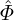
, δ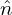
i′, and δ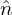
e. Expression (259) implies that pi is given by
pi is given by
| (265) |
Using this, equation (264) is written
| (266) |
Multiplying both sides by (1 + k⊥2ρi2)∕𝜀0, the above equation is written
| (267) |
Next, transforming the above equation back to the real space, we obtain
| (268) |
Neglecting the Debye shielding term, the above equation is written
| (269) |
which is the equation actually solved in many gyrokinetic codes, where λDi2 = 𝜀0Ti∕(qi2ni0).
In Sec. 6, to evaluate the polarization density, the potential δΦ is Fourier expanded in space, and then the double gyro-angle integration of each harmonic is expressed as the Bessel function. (This method is often used in numerical codes that use specrum expansion in both radial and toroidal direction, where the local perpendicular wave number can be easily calculated numerically. The GEM code uses this method.) In this section, we avoid using the local Fourier expansion, and directly express the double gyro-angle integral as linear combination of values of δΦ at spatial grid-points.
Then A(x) is written as
where N1 is the number of points chosen for α discretization, N2 is the number of points chosen for α′ discretization. For notation ease, define
| (271) |
which is a function of (x,v⊥,αi,αj′). Then Eq. (270) is written as
The guiding-center transform and its inverse used in the above are illustrated in Fig. 2.
Let us summarize the above algorithm. Given v⊥, the double gyro-angle integration at a particle location x is evaluated by the following steps:
Use the guiding center transform to get guiding-center locations (four locations are shown in Fig. 2, namely Xi with i = 1,2,3,4, corresponding gyro-angle αi with i = 1,2,3,4;
For each guiding-center location, use the inverse guiding-center transform to calculate points on the corresponding gyro-ring (four points are shown for each guiding-center Xi in this case, namely xij with j = 1,2,3,4, corresponding gyro angle αj′ with j = 1,2,3,4.)
Then the double gyro-angle integral appearing in the polarization density is approximated as
| (273) |
where N1 = 4,N2 = 4 for the case shown in Fig. 2.
The above 3 steps specify how to approximate the double gyro-angle integration as the sum of values of δΦ at discrete spatial points xij. The spatial points xij are not necessarily grid points. Interpolations are used to further express δΦ(xij) as weighted combination of δΦ values at gridpoints.
In the field-aligned coordinates (x,y,z), Fourier expand δΦ along y:
| (274) |
where ι =
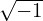
, Ny is an even integer specifying how many harmonics are included, δΦn is the expansion coefficient. Using expression (274) in Eq. (272), we obtainFrom Eq. (275), the Fourier expansion coefficient of A(x) can be identified:
Assume each toroidal harmonic amplitude δΦn(x,z) is weakly varying along field line, then we can make the following approximation:
| (277) |
because the variation along a field line over a distance of a Larmor radius is small. Then expression (276) is written as
The approximation (277) makes the dependence of An(x,z) on δΦn(x,z) become local in the z direction, i.e., An(x,z) at z = z0 only involves values of δΦn(x,z) at z = z0. Meanwhile An(x,z) at x = x0 involves values of δΦn(x,z) at x≠x0 besides x = x0.
Assume that F0 is Maxwellian, then
| (279) |
Note that Δρij is independent of v∥. Then the integration over v∥ in Eq. (278) can be analytically performed:

where v⊥ = v⊥∕, and use has been made of
| (280) |
Expand δΦn(x,z) in terms of sine basis functions sin(mπx∕Lx):
| (281) |
i.e.,
| (282) |
For a given n and at a given z, consider An(xJ,z) with J = 1,…,Nx − 1 as a column vector, and similarly δΦn(xk,z) with k = 1,…,Nx − 1 as a column vector. Then the two column vectors are related by the following matrix form:
where MJk is a (Nx − 1) × (Nx − 1) matrix with its elements given by